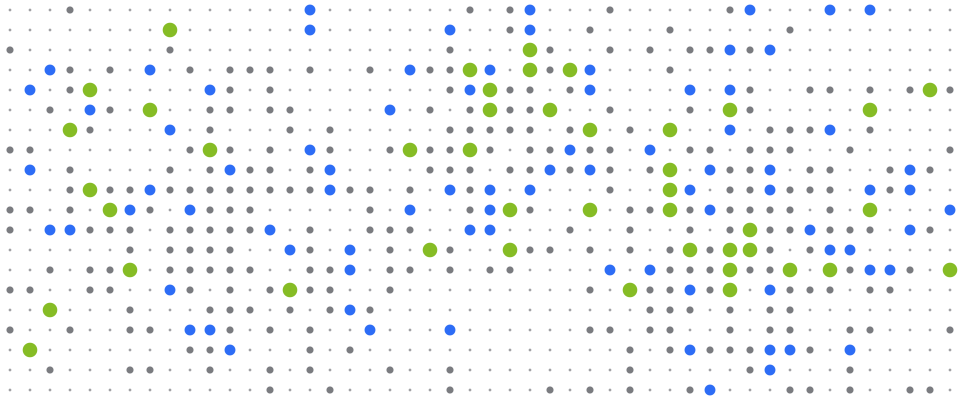

01 / الوصول الصحيح
اعرفوا كل منفذ مهم، ثم غطّوا المنافذ التي تستحق.
خريطة موثّقة لمنافذ البيع تحلّ محل الأعداد التقديرية والنقاط العمياء، فيتوجّه جهد الفريق الميداني إلى المنافذ التي تحمل الفئة.
حصر منافذ البيعخريطة المنافذتغطية القنواتمسار الوصول إلى السوق
تعرّف على الوصول الصحيح